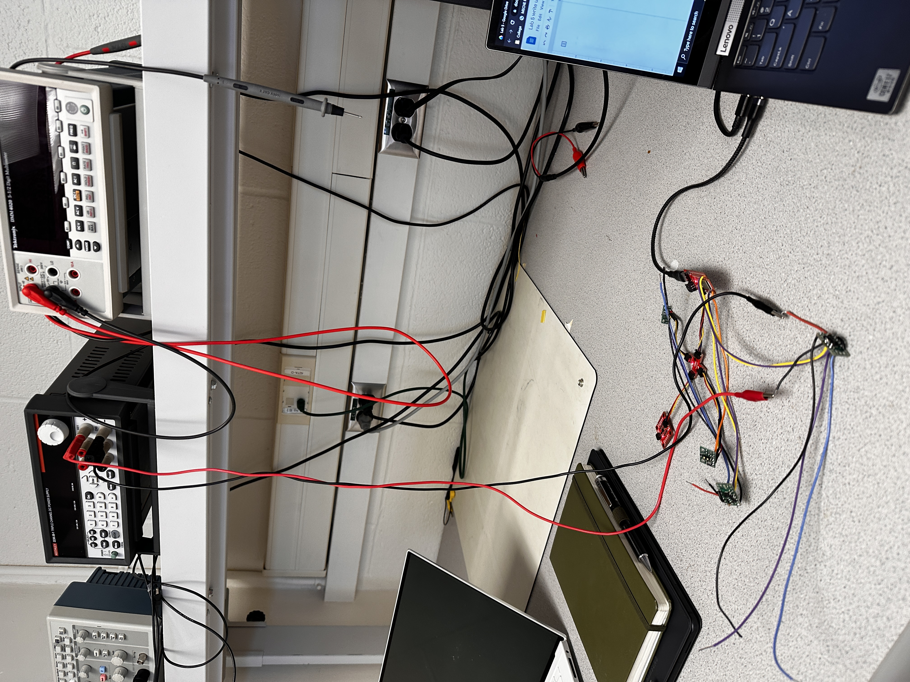
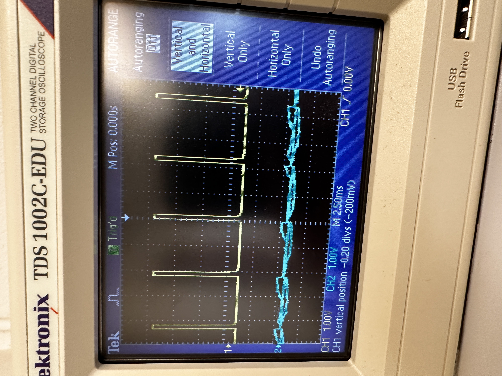
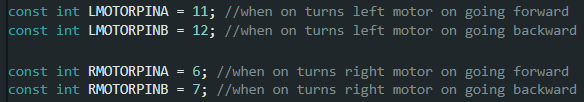
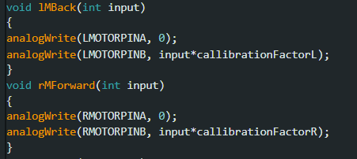
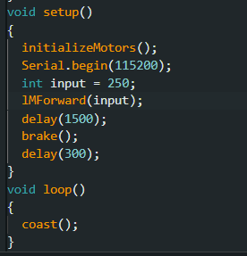
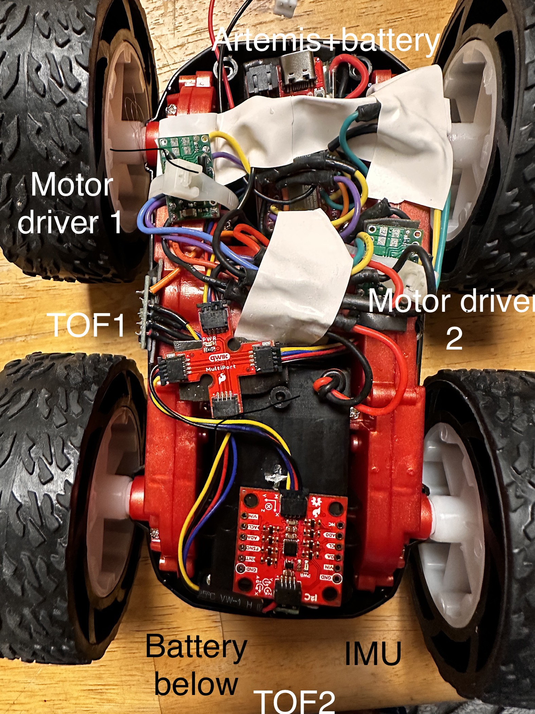

INTRODUCTION
Motor control in a stunt robot, like the one used in this class, needs to be precise, powerful and accurate. I was able to accomplish these goals by following the tasks outlined in Lab 5, Through the use of the motor drivers provided, my newly put together robot exhibits expert meneuverability and advanced motor control through a two-channel H-bridge.
BEFORE LAB
Prior to coming into lab, I had to decide what the wiring would look like for my completed robot. The circuitry drawn below is my plan for the wired connections. Everything was soldered with braided wire where possible and with the connections to the pre-designated Artemis pins. The pins for the motor driver inputs in particular were chosen for their PWM support and relative proiximity. One interesting note are the two batteries I used to power the robot. Splitting up the batteries plays an important role in performance. I could've used a single battery that could've powered both the Artemis and the motor, but this would've come with a few issues. While the Artemis will take a very small percentage of the total battery capacity, seperating the batteries still remains useful in order to avoid transient effects which may prematurely reset the microcontroller after current draw. The additional battery will also add to our total energy capacity, allowing me to continue testing for longer.
.png)
THE MOTOR DRIVERS
Being able to test the motor drivers before using them on my actual robot proved an exceptional way to verify my wiring and characterize the PWM signals from an oscilloscope. Avoiding battery power at this point, I was able to determine that the ideal voltage to set the power supply should be the same as the battery would supply: 3.7V. Above is a picture of the setup I used to test the motor drivers. The experiment proved successful and pretty soon I was on my way to testing different motor speeds and battery power as shown below.
Above I test the motors through the power supply unit in the lab. Below is some corresponding oscilloscope data from the input pins on the motor driver
Above is a video of the battery powered test I performed on the car and below is the code used to test. I constantly changed the code to accomodate different responses, however, the same functions were reused and based off the below code.  
ASSEMBLY
After a few hours of soldering, clipping wires, and re-soldering, I was able to come up the following final bot:
CALLIBRATION
The next task given in the lab manual after assembly was to start with some remote operation and callibration of the motors. This meant driving the car in a straight line for 6 feet. By iteratively uploading, testing, and revising coefficients on the left and right motors, I was able to determine coefficients that gave the results in the below video. Because I pre-made various functions for the previous task that would take a power level as a parameter, the process was fairly simple. As an additional note, I changed my previous code to take a power level between 0 and 100. This power level gets mapped to a PWM value between 65-255 for the left motor and 60-255 for the right. This eliminates the deadband that I tested in the motor. An input of 0 still maps to 0 in order to stop but now a power level of 10 will still yield motion.
The final task had us verifying that we could exhibit remote open loop control of our robot through jupyter lab. Below is a video of me giving various inputs to the bot and it reacting accordingly. The code I used was, again, the same header file I created to test the motors imported into the bluetooth code file in order to create commands that could be received.
CONCLUSION
Advanced motor control opens up the door to all the possibilities for our RC car. It's the backbone of the way our stunt car will interact with the world and when it's done right, it can be very straightforward to implement and understand.